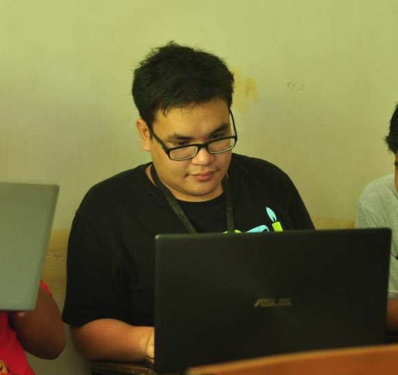
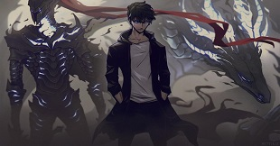
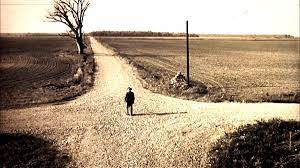

My full name is Nathan Frederick Manuel de Guzman Almonte, I am currently 25 years old hailing from Davao City my hometown. I was born in December 16 1995 in General Santos City to my parents Emmeline Almonte and Eduardo Almonte. Where they then spent 2 years raising me and my sister Alexandra in Polomolok, South Cotabato where they worked at the time at Dole Pineapple Philippines where my father delivered produce while my mother worked as a teacher. They then moved here to Davao City in 1998 as it was developing well at the time and they wanted to raise me and my sister in a safe environment.
When we moved here we initially lived in Ulas, just neighboring the Coco-Cola Plant there where we lived for 2 years, before we found a house located in Juna Subdivision, which was not only closer to the center of the city but much closer to any schools in the area. When we moved there I attended preschool at Little Steps Nursery, then went on to Ateneo de Davao University, where I spent my elementary years. Around this time I was in Grade 2 I was joined by a third sibling, a little brother by the name of Dominic. I mostly spent my elementary years as a quiet student for the most part but I could be energetic and mischievous sometimes, especially around my friends. I tried aiming for honors throughout my elementary years which made my parents quite proud as I was usually an honor student for the most part.
I then took the entrance exam for Philippine Science High School wherein I passed and spent my highschool years there in the Southern Mindanao Campus, where I made many new friends from all over Mindanao. I did not perform as well in highschool, there were alot of things to be done and I was very often sleep deprived, even then, I still managed to graduate. Near the end of my senior year it was time I decided on a college and decided on the University of the Philippines, eventually taking the UPCAT, I believed I would pass the UPCAT and only decided to take the exam for UP, I did not take any other entrance exams. Fortunately I passed and was able to enroll in the Mindanao Campus where I studied Computer Science. I then transferred to Malayan Colleges Mindanao where I am now currently studying Entertainment and Multimedia Computing.

I like reading books, mostly of the fantasy and adventure genre. In my younger years I did not actually like reading that much. It was only when I was forced to read as a requirement for school and actually found books that piqued my interest that I started reading more and more.
I also enjoy watching anime and reading manga. I like how creative and stylistic the story and art is. I started from a very young age and haven't stopped watching anime and reading manga since then.

I also enjoy playing various games. Both singleplayer and multiplayer. I tend to prefer adventure and fantasy based games though or MMORPGS.
I wake up late, each lunch/brunch. Perform any schoolwork activities, sleep in the afternoon, play games at night then sleep again.
As I am already 25 years old it won't be long until I am 30 years old, so instead I will just put my goal here to get a good job and to be someone I can be proud of.
